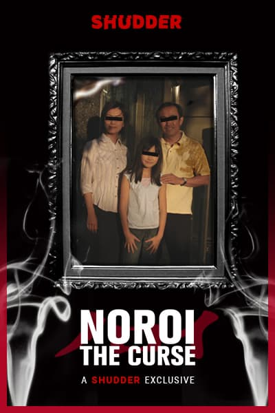
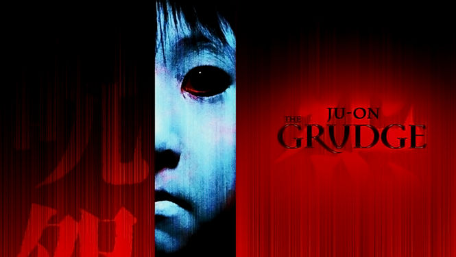
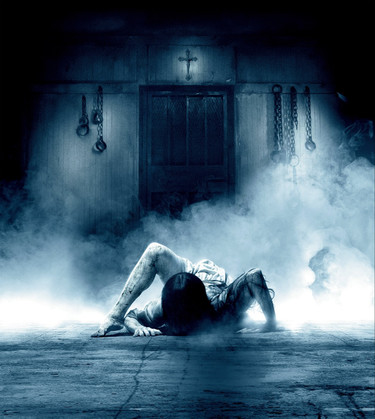

When it comes to movies, the Japanese film industry is one of the most aesthetically evolved. That is not very surprising since we are talking about the land that gave us Akiro Kurosawa. Kurosawa might have declared the arrival of Japanese cinema in the global scene but that baton has been carried on only forward since then. One of the most popular genres, J-Horror or Japanese Horror, garners worldwide attention. It might appear a bit offbeat if we adhere to Hollywood standards. J-Horror is gloriously gory, suspenseful, folk-religious and focuses a great deal on psychological horror. Here is a list of some of the horror movies you must not miss, in no particular order.
#1 Noroi (2005)
Long and complex, Noroi has been made in the documentary-found-footage style. Movie focuses on a paranormal expert who disappears during the making of a disturbing documentary, The Curse. 
#2 Ju-On (2002)
This movie is mostly popular as The Grudge. It is perhaps one of the most widely-watched and well-received horror movies ever. And that kid ghost! Dear God!
#3 Ringu (2002)
This terrifying movie is also extremely popular. Much like Ju On, Ringu keeps the audience nicely petrified to look away from the screen. Sadako emerging from the well and then from the television set will forever be seared into our brains.